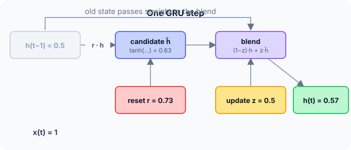

Prerequisites
The analogy
Everyday analogy
Think of updating a running weather forecast. The reset gate decides how much yesterday's forecast should influence today's draft; the update gate decides how much of the draft replaces yesterday's forecast.
With the update gate near 0, the forecast barely changes, so information is kept for a long time.
How it works
Equations: $z = \sigma(\cdot)$ (update), $r = \sigma(\cdot)$ (reset), $\tilde h = \tanh(w_x x + w_h (r \cdot h_{t-1}))$, $h_t = (1 - z)\, h_{t-1} + z\, \tilde h$. Here $w_x = 0.6$, $w_h = 0.4$, and the gate pre-activations are 0 (update) and 1 (reset).
Start with one GRU step by hand
$h_{t-1} = 0.5$, $x_t = 1$. Predict, then open "Check".
Example: predict before you read
Step 1. Gate values $z = \sigma(0)$ and $r = \sigma(1)$.
Check
$z = 0.5$, $r \approx 0.731$.
Step 2. Cover the next line and guess: the candidate $\tilde h = \tanh(0.6 \cdot 1 + 0.4 \cdot (0.731 \cdot 0.5))$.
Check
Inside: $0.6 + 0.4 \cdot 0.366 = 0.746$; $\tilde h = \tanh(0.746) \approx 0.633$.
Step 3. Blend with the update gate: $h_t = (1 - z) h_{t-1} + z \tilde h$.
Check
$0.5 \cdot 0.5 + 0.5 \cdot 0.633 \approx 0.566$.

Quick recall: Before reading further, cover the text above and say out loud: what do the reset and update gates do?
Check your answer
Reset controls how much of the old state is used to build the candidate; update controls how much the candidate replaces the old state.
Finish the picture: extreme gates
Same $h_{t-1} = 0.5$, $x_t = 1$.
- $z = 0$. Predict $h_t$.
Check
$h_t = 0.5$, exactly the old state, whatever the input: long-term memory.
- $r = 0$, $z = 1$. Predict $h_t$.
Check
The candidate ignores the past: $\tilde h = \tanh(0.6) \approx 0.537$, and $h_t = 0.537$. The cell starts fresh.
Quick recall: Without scrolling up, say out loud: what does $z = 0$ do to the hidden state?
Check your answer
It copies the old state unchanged: $h_t = h_{t-1}$, which is how a GRU keeps long-term memory.
Full worked calculation
Two GRU steps, with input weight $w_x = 0.6$ and state weight $w_h = 0.4$ for the candidate. Step 1: $h = 0.5$, $x = 1$, gate pre-activations $z_z = 0$, $z_r = 1$. Step 2: $x = 0$, $z_z = 1$, $z_r = -1$.
| Step | Update $z$ | Reset $r$ | $r \cdot h_{\text{old}}$ | Candidate $\tilde h$ | New $h$ |
|---|---|---|---|---|---|
| 1 | 0.5 | 0.731 | 0.366 | 0.633 | 0.566 |
| 2 | 0.731 | 0.269 | 0.152 | 0.061 | 0.197 |
-
1Step 1: the two gates
$$z = \sigma(0) = 0.5, \qquad r = \sigma(1) = 0.731$$The update gate $z$ will decide how much of the state to replace; the reset gate $r$ decides how much of the old state the candidate may look at.
-
2Step 1: the candidate
$$\tilde h = \tanh(w_x x + w_h \cdot r h) = \tanh(0.6 \cdot 1 + 0.4 \cdot 0.731 \cdot 0.5) = \tanh(0.746) = 0.633$$The old state is first scaled by the reset gate (0.5 → 0.366), then combined with the input. A reset gate near 0 would let the candidate ignore the past completely.
-
3Step 1: blend old and new
$$h = (1 - z)\,h_{\text{old}} + z\,\tilde h = 0.5 \cdot 0.5 + 0.5 \cdot 0.633 = 0.250 + 0.316 = 0.566$$With $z = 0.5$, the new state is half old, half candidate. Like the LSTM's cell update, this is a weighted sum, not a squashing.
-
4Step 2: gates
$$z = \sigma(1) = 0.731, \qquad r = \sigma(-1) = 0.269$$Now the network wants to overwrite more (z high) and to mostly ignore the past in the candidate (r low).
-
5Step 2: candidate and new state
$$\tilde h = \tanh(0 + 0.4 \cdot 0.269 \cdot 0.566) = \tanh(0.061) = 0.061, \qquad h = 0.269 \cdot 0.566 + 0.731 \cdot 0.061 = 0.152 + 0.045 = 0.197$$With no input and a small reset, the candidate is almost 0, and a high $z$ replaces most of the state with it: the GRU is choosing to forget.
-
6Compare with the LSTM
$$\text{GRU: } 2 \text{ gates, 1 state} \qquad \text{LSTM: } 3 \text{ gates, 2 states } (c, h)$$$(1 - z)$ plays the role of the LSTM's forget gate and $z$ the role of its input gate, tied together so they always sum to 1. Fewer parameters, usually similar accuracy.
What the numbers tell us
One GRU step: gates $z, r$; candidate $\tilde h = \tanh(W x + U (r \odot h))$; new state $h = (1 - z) h + z \tilde h$. Here $h$ went 0.5 → 0.566 → 0.197.
When $z \approx 0$ the state is copied unchanged, so gradients can flow far back in time, as with the LSTM.
The rule in plain words
From $x_t$ and $h_{t-1}$ compute the update gate $z$ and reset gate $r$ (sigmoids), then the candidate $\tilde h = \tanh(W x_t + U (r \odot h_{t-1}))$.
New state: $h_t = (1 - z) \odot h_{t-1} + z \odot \tilde h$, an interpolation between keeping and replacing.
Quick recall: Before you read the code, describe one GRU step in your own words. Then check below.
Check your answer
Compute the two gates, build the candidate from the input and the reset-scaled old state with tanh, then mix old state and candidate using the update gate.
The code
Read this code after you have done the step by hand. It will make more sense.
double sig(double z) { return 1 / (1 + exp(-z)); }
double gru_step(double h_prev, double x, double zz, double zr, double wx, double wh) {
double z = sig(zz), r = sig(zr); /* update and reset gates */
double cand = tanh(wx * x + wh * (r * h_prev)); /* candidate state */
return (1 - z) * h_prev + z * cand; /* blend old and new */
}Definition
What you just did, in one line: a GRU (gated recurrent unit) is a recurrent cell with an update gate that blends the old hidden state with a candidate, and a reset gate that controls how much of the past the candidate uses.
flowchart LR
HP["h(t-1)"] -->|"× reset r"| C["candidate h̃ = tanh(...)"]
X["x(t)"] --> C
HP -->|"× (1 - z)"| M["+"]
C -->|"× z"| M
M --> H["h(t)"]
Putting numbers on it
Quick recall: Before looking at the formula, predict: how many weight blocks does a GRU have, compared with an LSTM's four?
Check your answer
Three (update, reset, candidate), so about 3/4 of an LSTM's parameters.
The GRU update, with our numbers:
$$h_t = (1 - z)\, h_{t-1} + z\, \tilde h = 0.5 \cdot 0.5 + 0.5 \cdot 0.633 \approx 0.566$$| Plain RNN | GRU | LSTM | |
|---|---|---|---|
| Gates | 0 | 2 (update, reset) | 3 (forget, input, output) |
| Separate cell state | No | No | Yes |
| Weight blocks | 1 | 3 | 4 |
| Long-range memory | Poor | Good | Good |
Warning
GRUs and LSTMs perform similarly on many tasks, and neither is always better. Try both, or use the faster GRU first; for long documents, Transformers usually beat both.
Exam tip
Map GRU to LSTM: the update gate plays the role of the forget and input gates combined ($1 - z$ and $z$), and there is no separate cell state or output gate.
Common mistakes
- Mixing up which gate builds the candidate (reset) and which blends (update).
- Writing $h_t = z\, h_{t-1} + (1 - z)\, \tilde h$ and then interpreting $z$ the other way round; conventions differ, so be consistent.
- Thinking a GRU has a cell state like an LSTM.
Try it yourself
Exercise 1 (warm-up)
With $z = 0.2$, $h_{t-1} = 1.0$ and $\tilde h = 0$, compute $h_t$.
Hint
Mostly keep the old state.
Answer
$0.8 \cdot 1.0 + 0.2 \cdot 0 = 0.8$.
Exercise 2 (a bit harder)
If the update gate stays at $z = 0.01$ and the candidate is 0 for 100 steps, starting from $h = 1$, what is $h$ at the end? Write your answer down before you open it.
Show answer
$h = 0.99^{100} \approx 0.37$: much of the memory survives 100 steps, because each step keeps 99% of the old state.
Did you know?
Did you know?
Kyunghyun Cho and colleagues introduced the GRU in 2014, in the paper that also proposed the encoder–decoder model for machine translation.
In many benchmarks GRUs match LSTMs while training faster, but on very long sequences LSTMs sometimes keep an edge.
Key points to remember
If you remember one thing from each line, remember the because.
- The update gate preserves memory because with $z$ near 0 the old state is copied forward.
- The reset gate lets the cell start fresh because with $r$ near 0 the candidate ignores the past.
- GRUs are lighter than LSTMs because they have three weight blocks instead of four and no cell state.
- Gradients survive many steps because the $(1 - z)$ path carries the state with little change.
- The new state is an interpolation because its two weights, $1 - z$ and $z$, sum to 1.
Self-check questions
Answer these in order, out loud. They follow the page, so your answers become the script of your video.
- How is a GRU like updating a running weather forecast?
Sample answer
The reset gate decides how much yesterday's forecast shapes today's draft; the update gate decides how much the draft replaces the old forecast.
- Compute one GRU step with $h_{t-1} = 0.5$, $x = 1$, $z = 0.5$, $r = 0.731$, $w_x = 0.6$, $w_h = 0.4$.
Sample answer
Candidate $\tanh(0.746) \approx 0.633$; $h_t = 0.5 \cdot 0.5 + 0.5 \cdot 0.633 \approx 0.566$.
- Why does the code multiply
h_prevbyrinside the candidate?A good answer says what $r = 0$ means.
Sample answer
The reset gate controls how much of the past the candidate may use; with $r = 0$ the candidate depends only on the current input.
- So what is a GRU, in one sentence?
Sample answer
A recurrent cell with update and reset gates that blends its old hidden state with a gated candidate, keeping long-term memory with fewer parameters than an LSTM.
- Why does a GRU keep information over long sequences?
A good answer uses $z$ near 0.
Sample answer
When the update gate is near 0, the old state passes through almost unchanged, both forwards and for the gradient backwards.
- How does a GRU differ from an LSTM?
Sample answer
Two gates instead of three, no separate cell state, no output gate, and about 25% fewer parameters.
- What happens with $r = 0$ and $z = 1$?
Sample answer
The past is ignored and replaced: the new state is just $\tanh$ of the current input term.
- If you had to teach this to a friend in 2 minutes, what would you leave out, and why?
Sample answer
I'd leave out the parameter count and conventions. I'd keep the forecast analogy, the one-step blend to 0.566, and "reset shapes the candidate, update blends old and new".
External resources
- PyTorch docs: nn.GRU: equations and usage.
- Wikipedia: Gated recurrent unit: architecture and comparisons.
- Chung et al.: Empirical evaluation of gated RNNs: GRU versus LSTM experiments.
Videos
- YouTube search: GRU explained: pick a short illustrated explanation.